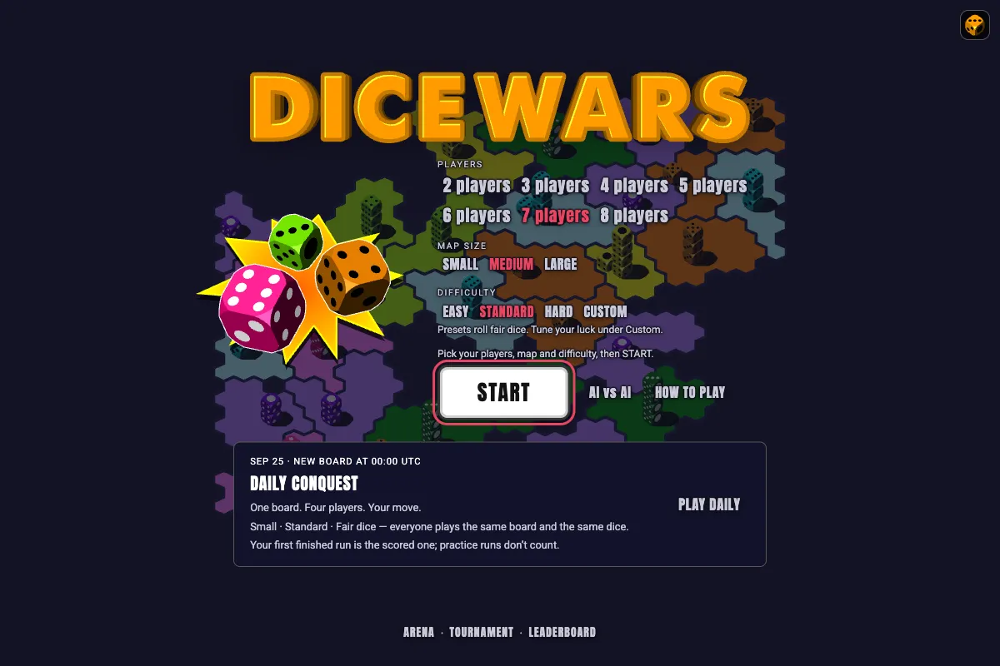
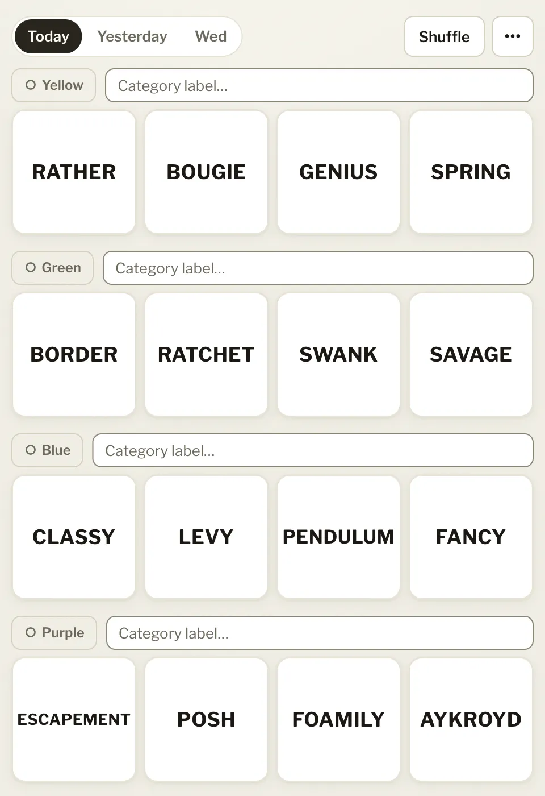

Drawn by
Ivan Lay
Roles
Operations Manager AI & Automation Leader
Sheet
ivanlay.com · 1 of 1
I run operations, and I build the automation myself.
Notes
- For 12+ years I’ve worked in support ops, bringing AI and automation into high-profile technical teams. I mentor people, untangle complicated problems, and tune processes until the team has real capacity to spare and customers feel the difference.
- I’d rather ship the tool than write a roadmap about it. Here are a few of them.
A few things I’ve built
-

DiceWars JSA browser port of Dice Wars, with a bot SDK and AI arena. Play (opens in a new tab) -

Connections SorterA scratchpad for rearranging the NYT Connections grid before you guess. Open (opens in a new tab) -
Standard work
- spec Stress-test the idea
- prd Write it up
- issues Cut grabbable tickets
- triage Route to agent or human
- AFK loop An agent picks it up